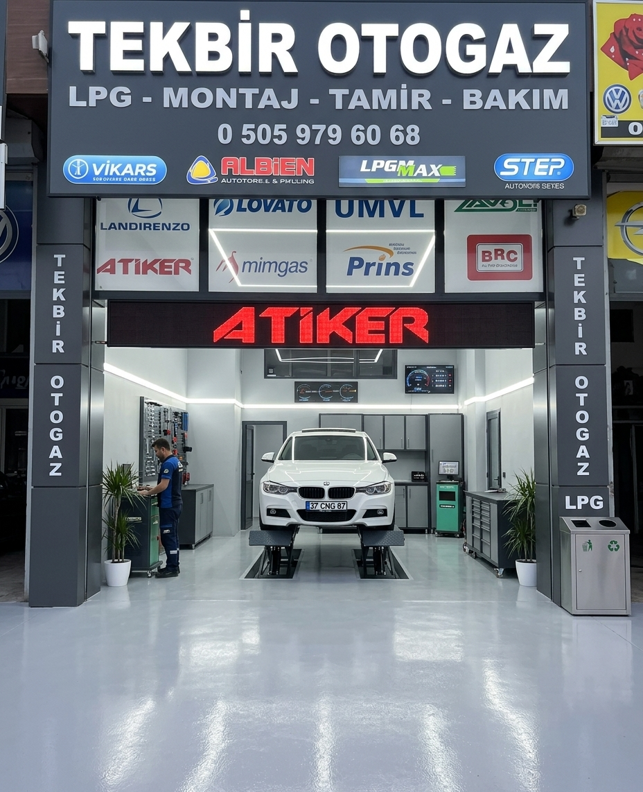

01LPG Dönüşüm Sistemleri
Benzinle çalışan araçlara LPG sistemi eklenmesi, aracın LPG ile de çalışabilmesini sağlar. Dönüşümde amaç; motor yapısına uygun bileşenleri doğru konumlandırmak ve montajı planlı biçimde tamamlamaktır.
Motor tipi, hacim ve kullanım biçimine göre sistem seçenekleri değerlendirilir. Uygulama öncesinde kapsam, süre ve süreç hakkında bilgi verilir.
- Sistem değerlendirmesi
- Montaj planlaması
- Tank konumu
- Devreye alma